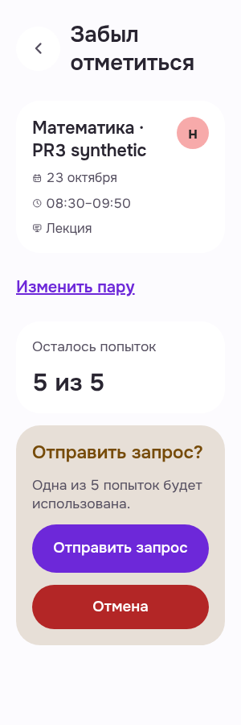
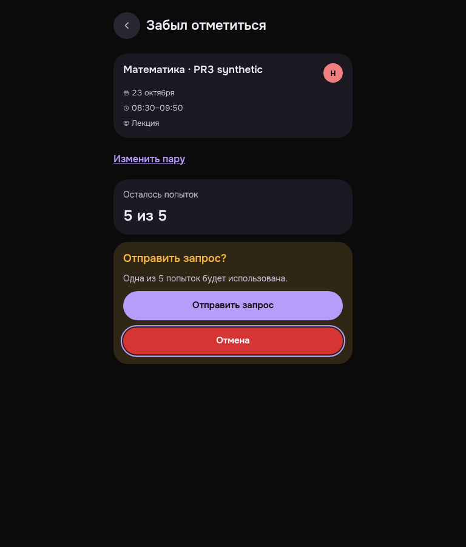

Студент: форма «Забыл отметиться»
Свежие options200 и собственная доступная пара привели к настоящей форме. Читаемость и фокус проверены без отправки заявки.
RawEXIT0/errors0; current Student3 bearer/canonical matched,42options/3lateeligible/5of5budget. Native Continue disabled before selection; form remained naturally submit-enabled. Two bounded PWA frames300light/root20 and768dark/Cancelkeyboardfocus; no submit/Cancel activation/newrequest/budgetconsumption, no fake validation inputs. Exact-own technical DELETE204/sameBearer401/browserclosed, not native logout PASS. No all-state/width/TMA/provider/success/conflict/unknown/retry claim.
Manifest · Критерии и ограничения
Забыл отметиться · light · 300 · 20px
Personally viewed original300light/root20: wrapped heading Забыл отметиться, ownlesson summary/date/time/type/status, Изменить пару, remaining5of5budget, confirmation text and both enabled actionbuttons are readable in viewport. No visible clipping/overlap in selected form. Submit and Cancel not activated.
PWA-MOBILE-LATECHECKINREQUEST__MB-LC-01-eligible-form-readonly-preview__light__300__root20__63d97497e
revision 63d97497eba26577a8af5fa1428fcc3c959c8992
SHA256 a4c9e37a84a63002c758383804556c37424097498cf8879e3d0d88d7f065e537

Забыл отметиться · dark · 768 · 16px
Personally viewed original768dark/root16: centered form, lesson summary, remaining5of5budget and confirmation readable; Cancel has visible purple keyboard focus ring. Same eligibleform, no submit/cancel activation or requestcreation.
PWA-MOBILE-LATECHECKINREQUEST__MB-LC-02-same-form-cancel-keyboard-focus__dark__768__root16__63d97497e
revision 63d97497eba26577a8af5fa1428fcc3c959c8992
SHA256 bc07f309b31f74cb3899cc535d9e9dc03b624eb5993c041c24c449eac8234cd2
